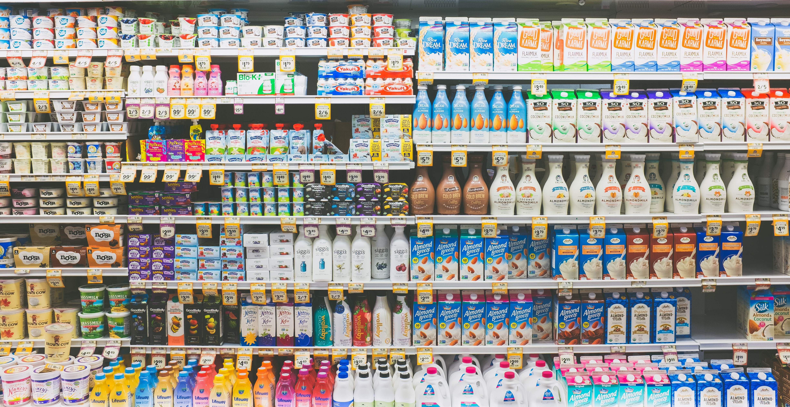

Kalite, marketimizin DNA'sının bir parçasıdır. Ürünlerimizi
titizlikle seçerken, taze ve sağlıklı seçenekleri öne çıkarırız.
Marketimiz, müşterilerimize en taze ve en kaliteli
ürünleri sunma konusundaki taahhüdüyle bilinir. Her gün, doğrudan
çiftliklerden ve güvenilir tedarikçilerden tedarik ettiğimiz
ürünlerimiz, müşterilerimize mükemmel bir alışveriş
deneyimi sunmamıza olanak tanır. Sebze, meyve, et, süt
ürünleri ve daha fazlası konusunda geniş bir yelpazeye sahibiz,
böylece her müşterinin ihtiyaçlarına uygun ürünler bulabilir.
Kalite, marketimizin DNA'sının bir parçasıdır. Ürünlerimizi
titizlikle seçerken, taze ve sağlıklı seçenekleri öne çıkarırız.
Müşterilerimize güvenilir bir kaynak olan marketimizi tercih
ettikleri için minnettarız. Ayrıca, hijyen ve ürün güvenliği
konusunda en yüksek standartları uygulamaktayız, böylece
müşterilerimizin rahat bir şekilde alışveriş yapmalarını sağlarız.
Müşterilerimize en iyi kalitede ürünleri sunma taahhüdümüzün bir
parçası olarak, ürünlerimizin fiyatlarını rekabetçi ve adil tutarız.
Her bütçeye uygun ürünler sunarız ve aynı zamanda düzenli olarak
kampanyalar ve indirimler düzenleriz. Bu, müşterilerimize yüksek
kaliteli ürünleri uygun fiyatlarla satın alma fırsatı sunar.
Hızlı ve Güvenilir Teslimat
Kalite, marketimizin DNA'sının bir parçasıdır. Ürünlerimizi
titizlikle seçerken, taze ve sağlıklı seçenekleri öne çıkarırız.
insanlar insandır
Ali Çalğan
Müşterilerimizin işlerini kolaylaştırmak ve alışverişlerini daha
hızlı hale getirmek için hızlı ve güvenilir teslimat hizmeti
sunuyoruz. Sitemizden verilen siparişleri en kısa sürede hazırlarız
ve güvenilir kargo firmaları aracılığıyla müşterilerimizin kapısına
teslim ederiz.
Online alışveriş yapmak her zamankinden daha önemli hale geldi, ve
müşterilerimizin bu ihtiyacını karşılamak için buradayız. İnternet
üzerinden sipariş vermek, rahatlığınıza odaklanmanıza olanak tanır,
çünkü alışveriş merkezlerinde zaman harcamanıza gerek yok.
Hızlı ve güvenilir teslimat, müşterilerimizin zamanlarını daha iyi
yönetmelerini ve işlerine odaklanmalarını sağlar. Ayrıca,
siparişlerin takip edilebilir olması, müşterilerimize kolaylık ve
güven sağlar.
Müşteri Desteği ve İletişim

Kalite, marketimizin DNA'sının bir parçasıdır. Ürünlerimizi
titizlikle seçerken, taze ve sağlıklı seçenekleri öne çıkarırız.
Müşteri memnuniyeti bizim için önceliklidir. Herhangi bir soru,
sorun veya geri bildirimle ilgili olarak müşterilerimize yardımcı
olmak için deneyimli bir müşteri hizmetleri ekibimiz bulunmaktadır.
İhtiyacınıza hızlı bir şekilde yanıt veririz ve herhangi bir
endişenizi gidermek için çaba sarf ederiz.
İletişim bizim için önemli bir köprüdür. İster ürün tavsiyeleri
istiyor olun, ister bir sorunuz olsun, size yardımcı olmaktan
mutluluk duyarız. Müşterilerimizin geri bildirimleri, işimizi
sürekli olarak geliştirmemize yardımcı olur.
Müşterilerimize en iyi hizmeti sunmak için 7/24 erişilebiliriz.
İletişim formumuzu kullanarak veya telefonla bizimle iletişime
geçerek, sorularınıza ve taleplerinize hızlı yanıt veririz.
Müşterilerimizin memnuniyeti, işimizin temel taşıdır.